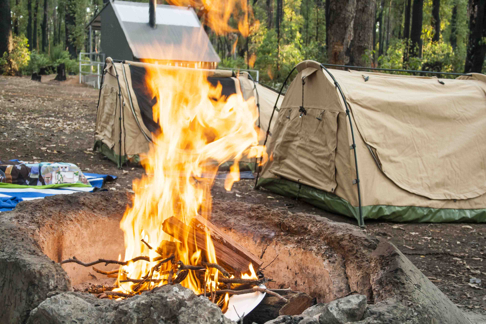
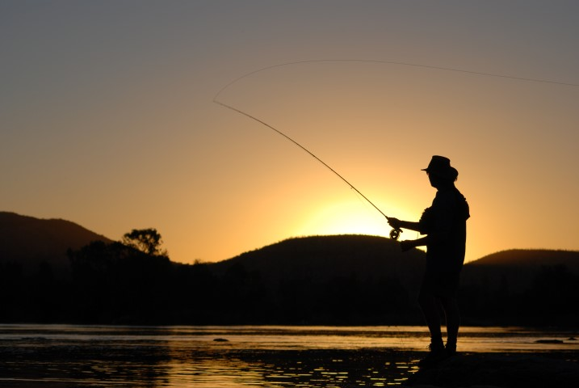
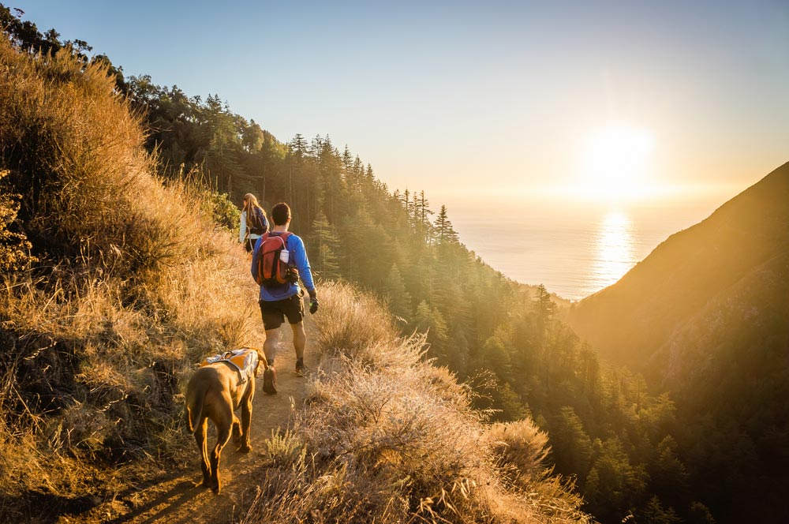
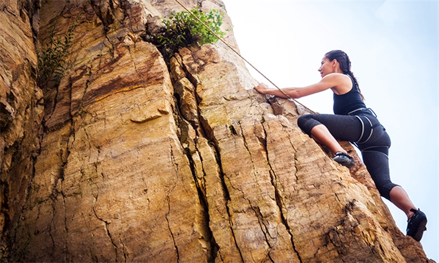

Camping
Blaauwberg Nature Reserve
Cape Town is unique due to its high concentration of local flora and fauna species. Our nature reserves protect and conserve our city’s natural areas and biodiversity heritage.
The Blaauwberg Nature Reserve has a spectacular view down fynbos slopes from Blaauwberg Hill, across the city, to seven kilometres of rocky, sandy coastline, the ocean and beyond. Blaauwberg Hill, is one of the few viewpoints in the world from where you can see two proclaimed World Heritage Sites, namely Table Mountain and Robben Island.
The reserve also offers the Montispectus self-catering unit, which you can hire out for a pleasant weekend getaway with family and friends.
Kogel Bay Resort
Kogel Bay Resort is located between Gordon’s Bay and Rooi Els, and borders Clarens Drive, a 20 kilometre scenic route that boasts whale-watching opportunities along largely undeveloped parts of the coastline. The resort is situated between high mountains; surrounded by indigenous fynbos and a four kilometre sandy beach; and forms part of the Kogelberg Biosphere Reserve. The high mountains shelter the beach from the strong south-easter winds during summer, making it a sought after beach and camping facility.
Fishing
Freshwater fishing spots in Cape Town include a variety of lakes, rivers and dams including peaceful fly fishing. It is often a good choice for beginners as well as anglers who prefer to catch and release. Species typically found in freshwater locations includes carp, trout and bass. Some of the freshwater fishing spots in Cape Town that you can consider include the following:
Brandvlei Dam: carp and whitefish
Rietvlei: carp and Mozambique tilapia
Lakenvlei: rainbow trout
Misverstand Dam: carp, largemouth and smallmouth black bass, and Mozambique tilapia
Sandvlei: carp, Mozambique tilapia, sharp tooth catfish and mullet
At the sea, you have a few different choices. You can fish from the shore, on the rocks or from a designated fishing area. Depending on the location and your experience, this can be peaceful or downright terrifying. You can also try a deep sea charter to fish on the open water. Species found in deeper seas include tuna. Charters make for a very fun, rewarding day out but be aware, some tours can be extremely challenging… especially when fishing for large game fish! In shallower waters, steenbras is often found. For sea fishing in Cape Town, try the following spots:
False Bay: bluefin and yellowfin tuna
Rooikrans: blacktail, hottentot, kob (kabeljou) and galjoen
Kommetjie Bay: white steenbras, stumpnose and galjoen from shore; tuna and albacore by boat
Hout Bay: snoek, tuna and crayfish
Melkbosstrand: steenbras, kob and blacktail
Langebaan: black marlin, broadbill and sand shark
Hiking
Lions Head
This is a wonderful hike for families, as well as for couples (the sunset is incredibly romantic from the top of Lions Head), and who wouldn't like to view the Cape from 670 meters with panoramic views of the city, Table Mountain , Robben Island, and the beaches below including Camps Bay and Sea Point.
There are two paths that can be taken to the summit. The adventurous path using the staples and chains or the easier route that avoids them.
This hike is very popular all year round especially when the moon is full. One is able to hike down almost with no extra torchlight, the moon can be so bright. If the moon isnt full grab the head torches and wind breakers and head off.
You are able to do a sunrise hike to the top, a day hike or even a sunset hike - your choice..
Cape Point Hike
Ending with a grand finale at Africa’s most south-westerly point, this single track trail down the Indian Ocean side of the Cape Point Reserve follows the meandering contours of its mountains, dipping down onto pearly beaches where baboons forage along a teeming ocean edge.
It’s also the best hike on the peninsula for wildlife: reptiles are common in summer, antelope and ostrich are often seen, and in spring, lucky hikers may walk next to breeching whales.
And Cape Point’s final trump card lies on its Atlantic coast. Hikers who want a taste of the Cape’s ocean life can walk on wild beaches past shipwrecks, keening gulls and otter tracks – flat walking with huge ocean views and plenty of wildlife surprises.
Rock Climbing
CiryRock
Get ready to rock at CityROCK indoor climbing gym in Cape Town. With hundreds of routes, overhanging climbing sections and over 450m² of climbing area, the indoor climbing gym is the largest of its kind in South Africa.
Strapped into a climbing harness with metres of vertical horizon before you, your first instinct is to keep both feet firmly on the ground. But once you’ve taken the first step up onto the first of many colourful landing spots that jut out from the ‘rock’ surface you feel a sense of power. An overwhelming determination to climb and keep climbing sets in and you’re off to reach your own personal summit.
Indoor climbing is sure to get your blood pumping and your muscles working. If you’re a novice climber, make sure you don’t make any plans that involve too much moving around in the days to come after your first climb.